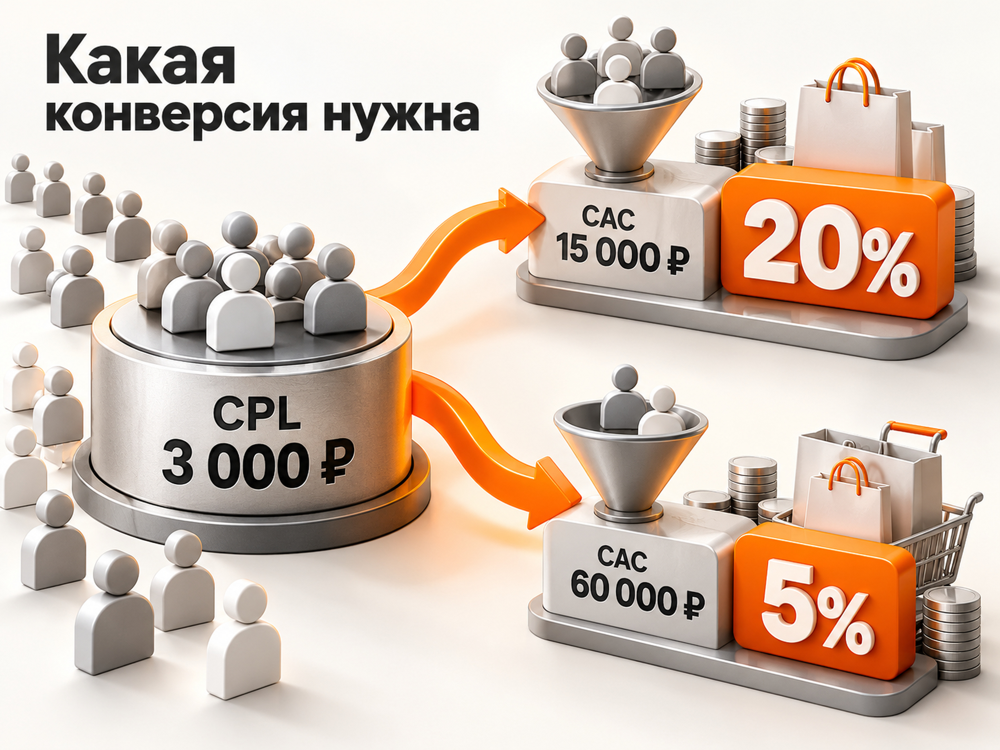
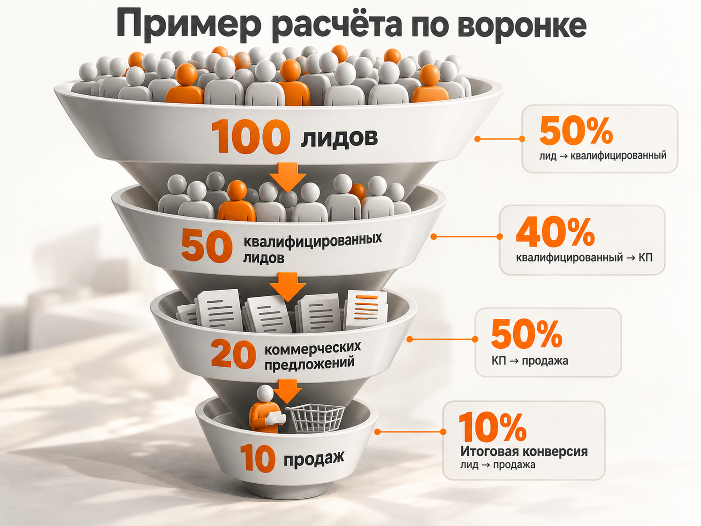

Блог о платном трафике
Конверсия лида в продажу: формула, примеры расчёта и норма
Конверсия лида в продажу - это процент лидов, которые в итоге становятся клиентами. Базовая формула простая: продажи / лиды × 100%.
Если компания получила 80 лидов и 12 продаж, конверсия лида в продажу составляет 15%. Но универсальной нормы здесь нет: одинаковый процент может быть отличным для одного бизнеса и слабым для другого.
Нормальную конверсию лучше определять не по усреднённым цифрам из интернета, а по экономике конкретного бизнеса: стоимости лида, допустимой стоимости продажи, качеству лидов и устройству воронки.
Что такое конверсия лида в продажу
Конверсия лида в продажу показывает, какая доля обращений в итоге превращается в оплату, договор или фактическую продажу. Эта метрика помогает понять, насколько хорошо работают реклама, квалификация лидов и отдел продаж.
Важно заранее договориться о двух вещах:
- что именно считается лидом;
- что именно считается продажей.
Лидом может считаться любая заявка, звонок, сообщение в мессенджере, подтверждённое обращение или только квалифицированный лид. Продажей может считаться оплаченный заказ, подписанный договор, предоплата или фактически полученные деньги. Если определения постоянно меняются, сравнивать проценты бессмысленно.
Как считать конверсию лида в продажу: формула и пример
Формула расчёта:
Конверсия лида в продажу = количество продаж / количество лидов × 100%
Пример:
- лиды - 80;
- продажи - 12.
Расчёт:
12 / 80 × 100% = 15%
Конверсия из лидов в продажи составляет 15%.
Это базовый расчёт, но на практике ошибка обычно возникает не в формуле, а в исходных данных. Если в одном отчёте лидом считать любую заявку, а в другом - только целевой подтверждённый контакт, итоговая конверсия будет несопоставимой.
Как посчитать конверсию на своих данных
Чтобы получить полезную цифру, считайте конверсию не абстрактно, а на своих реальных данных из CRM.
Порядок расчёта такой:
- Выберите конкретный период или когорту лидов.
- Выгрузите количество лидов за этот период.
- Определите, какое событие будет считаться продажей.
- Посчитайте, сколько лидов из этой группы дошли до продажи.
- Разделите продажи на лиды и умножьте на 100%.
Если цикл сделки длинный, лучше считать не все продажи месяца, а именно результат по когорте лидов, полученных в конкретном периоде. Иначе данные будут искажены: часть сентябрьских продаж может оказаться результатом июльских или августовских лидов.
Почему средняя конверсия по рынку почти ничего не говорит
Запрос «какая конверсия лида в продажу считается нормальной» кажется логичным, но усреднённые цифры по рынку обычно мало полезны. Даже в одной нише компании могут считать разные сущности.
Например, одна компания считает лидом любую заявку с сайта. Другая сначала проверяет регион, бюджет, потребность и сроки, а затем переводит обращение в статус квалифицированного лида. Формально обе компании говорят о конверсии лида в продажу, но сравнивают разные этапы воронки.
То же самое относится к источникам трафика. Лид из горячего поискового запроса, повторный клиент и обращение после охватной рекламы формально могут попадать в один отчёт, но реальная вероятность покупки у них разная.
От чего зависит и как повысить конверсию лида в продажу
Повышать конверсию нужно не вслепую, а через поиск проблемного этапа. Сам по себе процент не объясняет причину результата.
Качество лидов
Если реклама приводит людей, которым подходит продукт, география, чек и сроки, продавать их проще. Если большая часть обращений не соответствует базовым критериям, общая конверсия неизбежно падает.
Источник обращения
Поиск, SEO, РСЯ, рекомендации, агрегаторы и повторные продажи дают разную аудиторию. Поэтому полезно считать не только общую цифру, но и путь по источникам: источник -> лиды -> квалифицированные лиды -> продажи.
Работа отдела продаж
Даже хороший лид ещё не является продажей. На результат влияют скорость первого ответа, количество попыток связаться, качество консультации, коммерческое предложение и контроль зависших сделок.
Оффер и условия покупки
Компания может получать целевые обращения, но терять их на этапе выбора поставщика. На конверсию влияют цена, гарантия, сроки, способы оплаты, условия договора и сила самого предложения.
Цена и цикл сделки
Чем сложнее и дороже продукт, тем длиннее путь к продаже. В B2B, недвижимости и дорогих услугах конверсию нельзя оценивать по той же логике, что и у простого недорогого продукта.
Если нужно понять, что именно улучшать, удобно смотреть короткую диагностику:
- мало квалифицированных лидов - проблема может быть в качестве трафика, оффере или критериях квалификации;
- много квалифицированных лидов, но мало КП - нужно проверять обработку и работу менеджеров;
- много КП, но мало продаж - нужно смотреть цену, условия, переговоры и конкурентоспособность предложения.
Какая конверсия лида в продажу считается нормальной именно у вас
Нормальная конверсия определяется не по чужой средней цифре, а по экономике бизнеса. Удобно идти от допустимой стоимости продажи.
Для этого нужны две величины:
- Стоимость одного лида - CPL.
- Максимально допустимая стоимость продажи - CAC.
Формула расчёта нужной конверсии:
Нужная конверсия = CPL / допустимый CAC × 100%
Пример 1:
- CPL - 3 000 ₽;
- допустимый CAC - 15 000 ₽.
3 000 / 15 000 × 100% = 20%
Это значит, что примерно каждый пятый лид должен становиться продажей.
Пример 2:
- CPL - 3 000 ₽;
- допустимый CAC - 60 000 ₽.
3 000 / 60 000 × 100% = 5%
Для одного бизнеса 5% будут слабым результатом, а для другого - полностью нормальной конверсией. Поэтому вопрос «какая средняя конверсия лида в продажу?» лучше заменить на вопрос «какая конверсия нужна моему бизнесу, чтобы экономика сходилась?».

Пример расчёта воронки: лид -> квалифицированный лид -> КП -> продажа
Считать полезно не одну итоговую метрику, а всю воронку. Тогда становится видно, где именно теряются люди.
Допустим, воронка выглядит так:
- 100 лидов;
- 50 квалифицированных лидов;
- 20 коммерческих предложений;
- 10 продаж.
Тогда получаем:
- конверсия лид -> квалифицированный лид = 50 / 100 × 100% = 50%;
- конверсия квалифицированный лид -> КП = 20 / 50 × 100% = 40%;
- конверсия КП -> продажа = 10 / 20 × 100% = 50%;
- итоговая конверсия лид -> продажа = 10 / 100 × 100% = 10%.
Такой расчёт помогает не только увидеть итоговую цифру, но и понять, где находится ограничение роста.

С чем сравнивать свою конверсию
В первую очередь - с собой же, но за сопоставимые периоды и при похожих условиях.
| Период | Лиды | Продажи | Конверсия |
|---|---|---|---|
| Период 1 | 100 | 8 | 8% |
| Период 2 | 100 | 11 | 11% |
| Период 3 | 100 | 14 | 14% |
Такое сравнение полезнее любой усреднённой отраслевой таблицы. Ещё лучше анализировать показатели в разрезе источников, продуктов, менеджеров, регионов, обычных и квалифицированных лидов.
Не смешивайте лиды разных периодов
Если цикл сделки длинный, нельзя автоматически считать конверсию месяца по формуле «продажи месяца / лиды месяца». Часть закрытых сделок может относиться к старым обращениям.
Для длинной сделки правильнее оценивать когорту: сколько лидов, полученных в конкретном периоде, в итоге дошли до продажи. Именно поэтому данные рекламы важно связывать с CRM и финальными статусами сделок.
Рост конверсии не всегда означает улучшение бизнеса
Рост процента сам по себе ещё не гарантирует улучшение результата. Например, если бизнес начинает слишком жёстко отсекать часть потенциальных лидов, конверсия может вырасти, но абсолютное число продаж упадёт.
Поэтому конверсию лида в продажу нужно смотреть вместе с:
- количеством продаж;
- стоимостью лида;
- стоимостью квалифицированного лида;
- стоимостью продажи;
- выручкой;
- прибылью.
Коротко о главном
Конверсия лида в продажу считается по формуле продажи / лиды × 100%. Но сама по себе средняя цифра по рынку почти ничего не говорит.
Полезный подход такой:
- сначала определить, что именно считать лидом и продажей;
- затем посчитать результат по своим данным и по своим когортам;
- после этого оценить, какая конверсия нужна по экономике бизнеса;
- и уже потом разбирать воронку по этапам: лид -> квалифицированный лид -> КП -> продажа.
Хорошей считается не любая «средняя по рынку» конверсия, а та, при которой бизнес получает нужное количество клиентов по приемлемой стоимости.